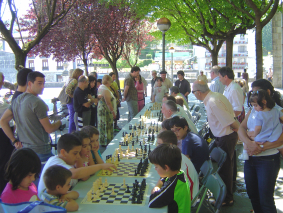
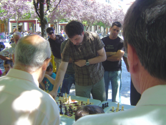

Club de Ajedrez Agustín de Leiza |
| » inicio » socios del club » cto. por equipos » últimos torneos » eventos organizados » enlaces |
Simultáneas de San JuanOtro año más hemos llevado a cabo en las fiestas patronales una exhibición de simultáneas en Goiko Plaza. Este año el tiempo también ha acompañado y ha lucido el sol sin hacer una temperatura excesivamente alta. En esta ocasión ha sido Claudio el encargado de llevar a cabo las simultáneas con Iosu como espectador de honor.  A pesar de que la gente al principio se hacía un poco la remolona, todos los tableros se han ido llenando a lo largo de la mañana y al final ha habido gran asistencia tanto de participantes como de público. Respecto a la actuación de Claudio, se puede calificar de honrosa, a pesar de perder 3 partidas.  |